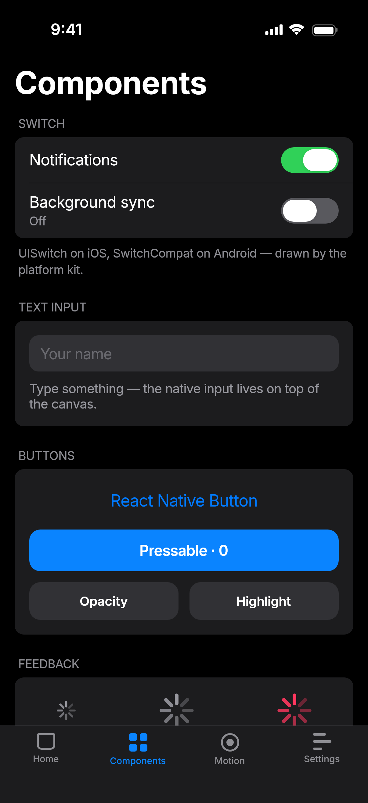
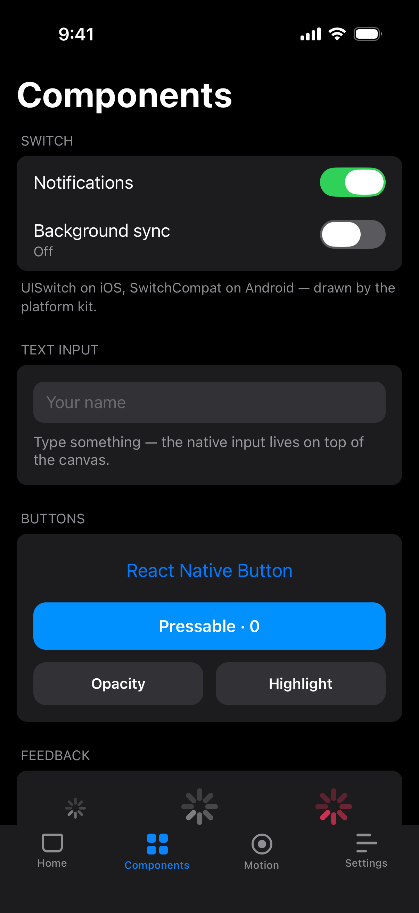
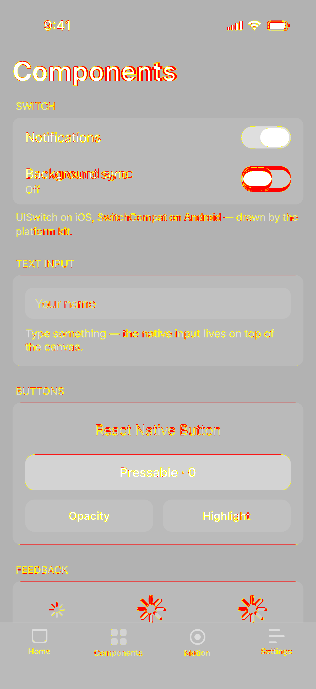
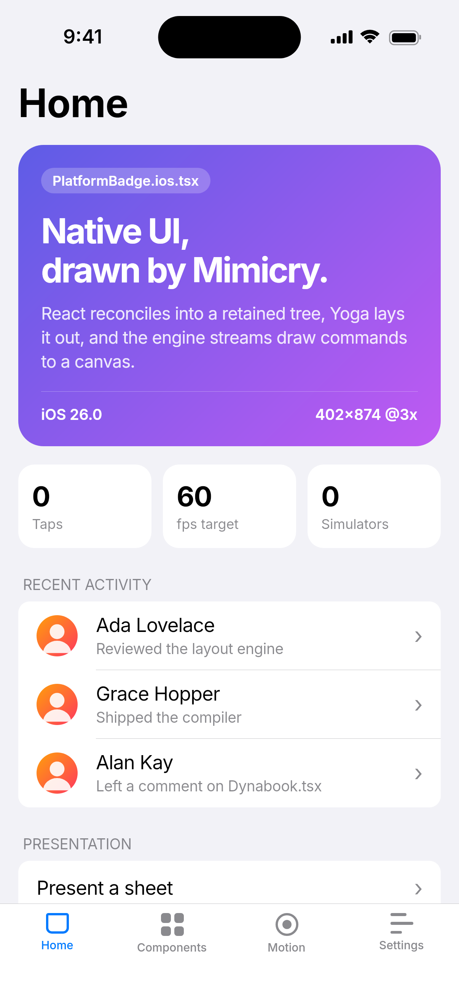
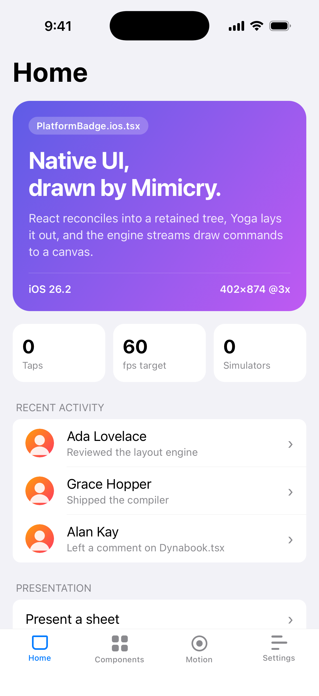
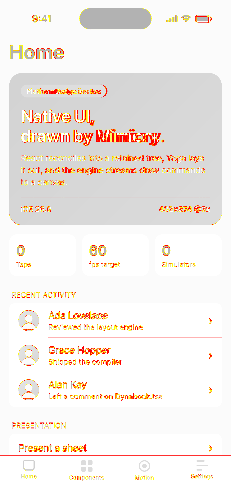
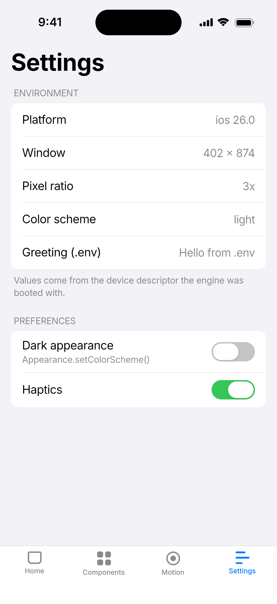
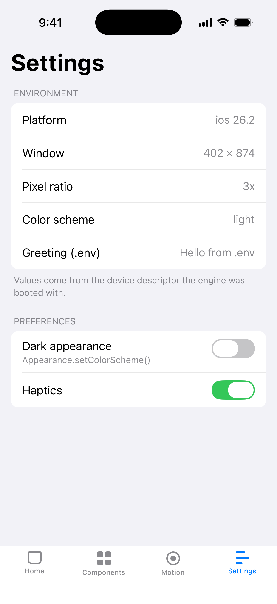
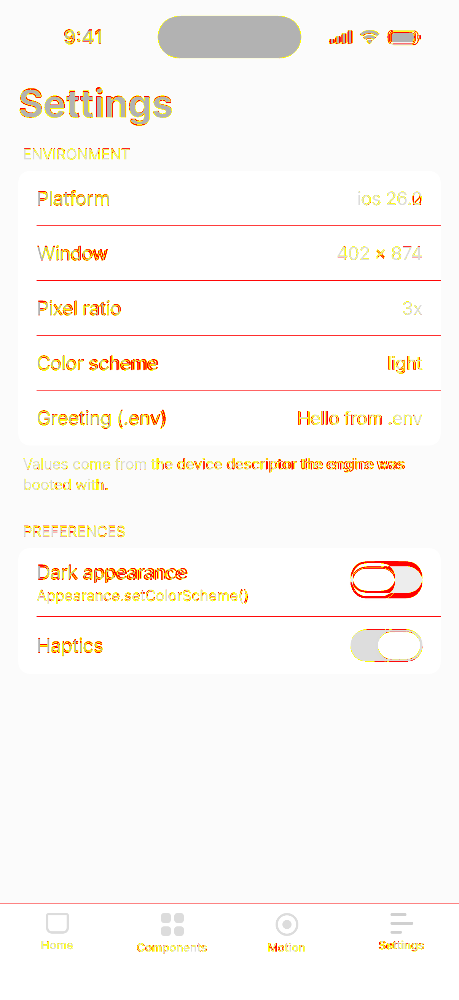

Engine vs simulator
components-dark 1.56% differ

Mimicry
Simulator
Differencehome 2.46% differ

Mimicry
Simulator
Differencesettings 1.14% differ

Mimicry
Simulator
Differencespring no reference capture